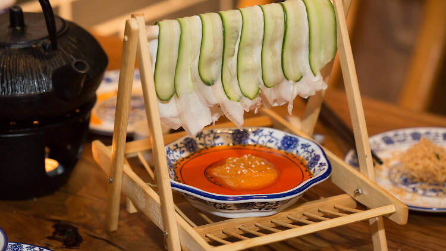
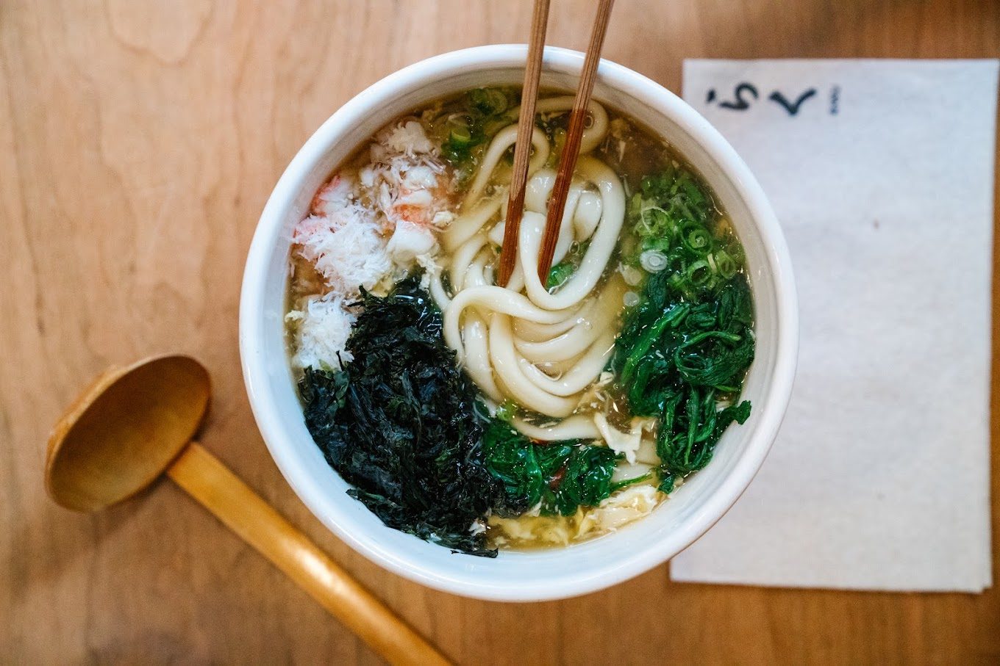
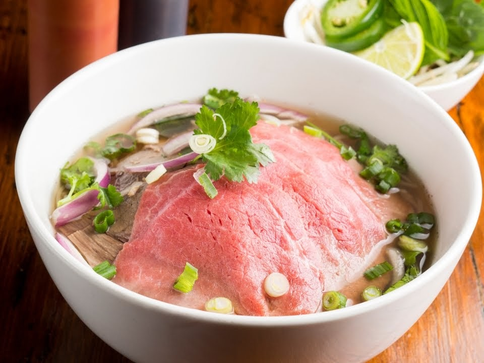
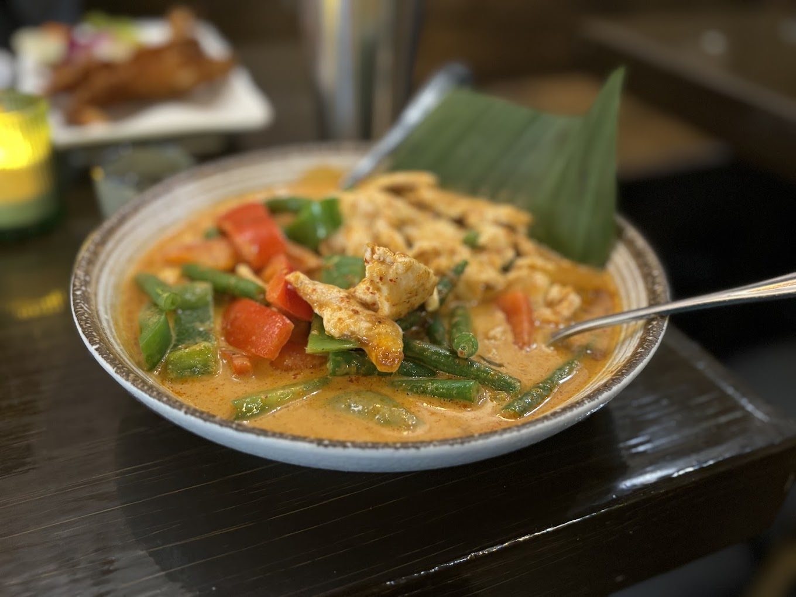
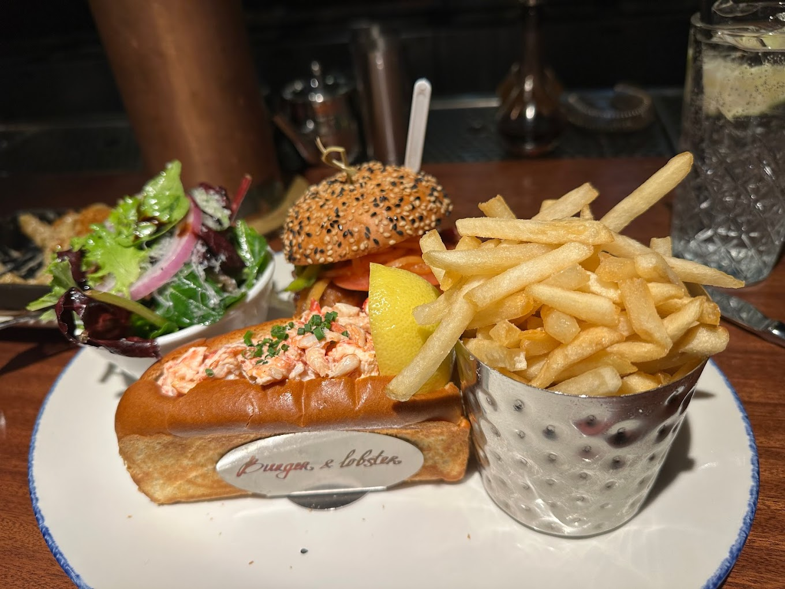

Lucky for you, you're in the right place! Here are some of my favorite eats around the city.

My absolute favorite restaurant in the world. Admittedly, there are a lot of factors going into this besides for the quality of the food. To start off though, yes, Szechuan is my favorite cuisine. The restaurant makes my absolute favorite dish (shui zhu niu), and they make it well! Second, I have so many memories of eating here with my friends, talking for hours in our booth and going through at least 5 pots of tea. Lastly, the interior looks perfectly and authentically Chinese. There are red lanterns hanging from the ceiling, booths with bamboo backing and bamboo frame chairs. There is even a koi pond in the front of the restaurant with a running water spout!
***Busy restaurant alert! Be prepared to wait, or else make a reservation beforehand.***

Raku is my favorite place to get udon in the city. The texture of their udon is unparalled! So chewy and long. The soup is incredibly flavorful too-- I like the long wooden spoon they give you to slurp it up. The table settings go well with the rest of the restaurant, which has a nice, minimalistic design. I love the udon with shrimp tempura but you can't go wrong with anything, even an udon with no toppings. At the same time, the noodles are super customizable so you can add as many toppings as you want! Don't get too carried away, because adding too many toppings can get pricy....
***Busy restaurant alert! Be prepared to wait, or else make a reservation beforehand.***

I go here a lot with my family because it's so close by. We're slowly working our way through the menu and haven't had anything less than delicious! Their pho is Michelin-rated and we also love their basil fried rice. The menu has many good appetizers like the wings and crispy pork belly. Even the pickiest person could find something they like here! Also, if you like to drink, wait until you see OBAO's cocktail menu. I haven't tried much of it, but the recipes are incredibly creative.

A cozy Thai restaurant! They have all the staples you could want like curry, pad thai, pad see ew, pad kra pao, and krapow moo krob (ok, now I'm just showing off how many dishes I know...). The interior is pretty small so don't be surprised, but as I said-- cozy!
***Busy restaurant alert! Be prepared to wait, or else make a reservation beforehand.***

I only went here one time with my family, but the lobster roll I had was incredibly buttery and flavorful. My mom and brother shared some kind of combination platter that came with another lobster roll, a whole lobster, a burger, fries, and salad. And all of these were incredibly tasty! This place can get pretty pricy but I would recommend it for a special occasion.
P.S. shout-out to all those hole-in-the-wall to-go places and street carts that I forgot to include! Adel's Famous (halal food truck near Radio City) would've been in my top 5. I recommend getting mixed chicken and lamb with spicy rice and fries on top. That's all, bye!